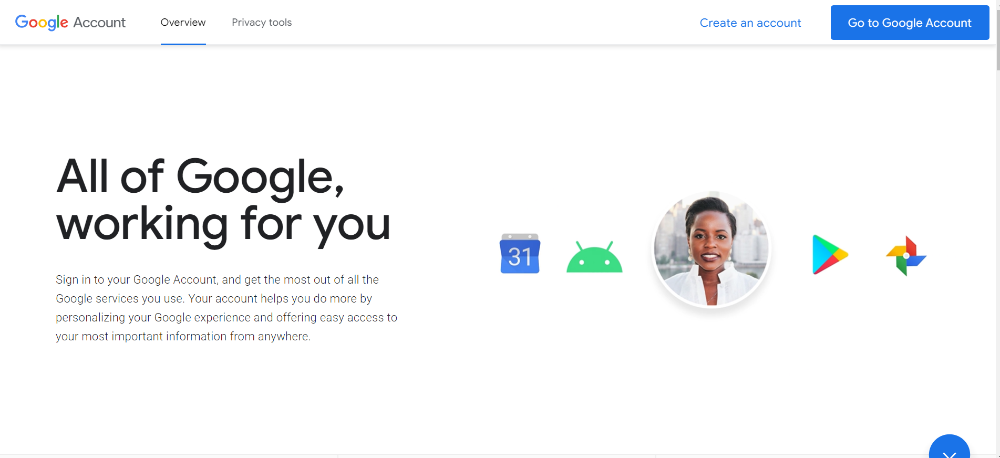

DESIGN PROCESS
Designing websites is my forte, blending aesthetics and functionality to create a flawless digital experience. My process begins with a thorough understanding of project goals, audience, and competition. Sketching, wireframes, and mockups provide a roadmap, and development adds interactivity. Usability testing ensures a user-friendly end product, merging creativity with strategy.
This website started out as a mars centred website but due to the API I chose at the beginning of this project.Initially, I chose the InSight API for its potential data richness but faced data limitations. To address this, I incorporated the NEO API for additional space-related data visualization. In the future, I may pivot the website to center around the NEO API if InSight remains incomplete.
I began by revisiting last semester's website, aiming to identify areas for improvement based on the received feedback. Initially, my wireframes closely resembled the previous iteration. However, after submitting assignment 1 for this block, I decided to explore new styling options.
After receiving a lot of feedback from my 2nd submission, I decided to make some rather drastic changes to this website in order for me to adhere to all the feedback and rules while trying to get my point across.
OLD WIREFRAME
For my last submission, I opted for various shades of red, ranging from crimson to burgundy. These Mars-inspired colours were influenced by an earlier iteration. To enhance readability and visual appeal, I switched to a gradient background, transitioning from earthy red to a soft pinkish hue, giving each section a distinct identity.
below are the new wireframes for this website.

NEW WIREFRAME
In this new wireframe, I took all the feedback I received and changed up the style of the website. Since it no longer revolves around the Mars API, I opted for a minimalistic look that was inspired by websites such as google and Space X.
I mainly took the simplistic nature of this website from google and utilized the white space of the background and the headings to give the page more structure.

I also decided to shift the content to the left after doing extensive research on the best way for content to be structured on a website. I opted for an Ariel font for better readability and to give the site a more orderly look.
The main colours I opted for were black and white for the overall sight. Not only does this look better, but it also looks very neat and allows for the user to quickly spot important colours that stand out such as the Data graphs.

I also changed the layout and style of the website to best mimic the SpaceX website, now the site best fits the space aesthetic after I changed the backgrounds from white to black while simultsaniously inverting the font colour as well.

Navigation
For Navigation, I received feedback stating that the previous navigation was rather unfriendly with regards to User Interface and engagement. I decided to remove all links that are not necessary on the page and kept it simple.
I also swapped around some colours and removed the previous CSS transition. The navbar is purely coded through CSS and HTML, in a future iteration I will incorporate JavaScript for smoother transitions.
I also made the background of the Navbar white in order for it to be easier on the users when they interact with the website. The feedback stated it was a bit difficult to locate the page buttons at the top of the screen so I went with a simpler alternative.
Data Visualization
Originally, I intended to incorporate elaborate D3.js graphs like bubble charts. However, due to missing information from the InSight API, I opted for simpler line and bar graphs using another API.
For this assignment I decided to recreate my graphs to better represent the data. For the 2 static graphs i utilized bargraphs and line graphs. For the interactive graph I decided to do a pie chart that displays two dates from the API. When clicked, one side of the chart will display the number of neos and additional data.
.png)
For the Data Art, I decided on creating small circles with a black background to represent asteroids floating in the void of space.
.png)
For the interactive artwork, I created a red spiral. The circle, which represents and neo, will turn blue when hovered over which will display information when clicked. I had a bit of an isssue with this artwork but simplicity works.